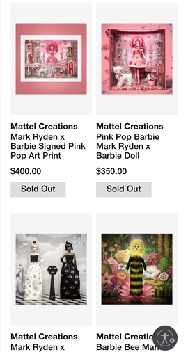
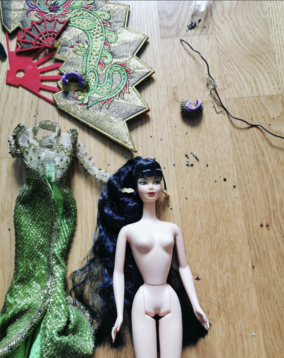
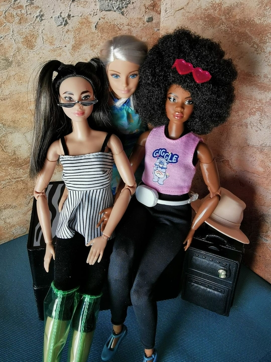
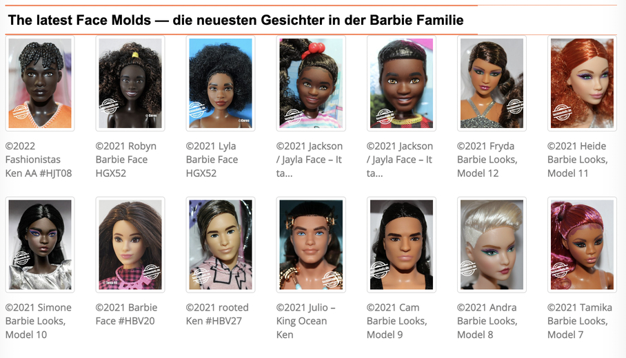

November 2022 - Barbie collectors are a unique breed. They are passionate about their dolls and often have extensive collections. If you're thinking about expanding or starting your own Barbie collection, there are a few things you should know before purchasing and researching your next doll. In this blog post, I show you three of the most important current tips for any collector!

1. Mattel's Barbie Creation Exclusives
As a Barbie collector, you're probably always on the lookout for the latest and greatest exclusive collector editions from Mattel, which usually can be found at https://creations.mattel.com/
In the past years the pink mania coining the term "Barbiecore" has taken over the world and many big names from fashion and art emraced their own Barbie collaboration: Balenciaga and Mark Ryden, for example, just to name two.
Many of these sought after items end up being exclusively available on the Mattel website. In recent months though, many fans have complained about the technicalities of these limited sales through the Mattel Creations page.
Not only do items show up as "SOLD OUT" seconds after their supposed premiere, but also huge amounts of bots used by resellers and scalpers seem to crash the site's servers on a regular basis, preventing passionate collectors from being able to make a purchase.
The recent Mark Ryden debacle (which is just a reiteration of previous sales that had doll collectors enraged) showed the limitations of Mattel's webshop once again:
the limited art dolls and accessories were marked SOLD OUT seconds after going online, then becoming partially available for pre-order 20 minutes later, only to be completely sold out within the hour.

In case you find yourself on the receiving end of this chaos, keep in mind a few things when shopping these special dolls:
Refresh the page and stay on the page during the first sales hour. Items may become available again (for small timeslots).
Try to access the shop page via the link you get if you are subscribed to the Mattel newsletter.
Login to Facebook and be present in the Barbie groups there. Usually other collectors have tips or news (from twitter or experience) that may help you find the best time to retry loading the page.
In case everything still fails and you cannot purchase an exclusive doll, be glad you saved yourself some money!
2. Thrifting Opportunities
There are many Barbie collectors who love to find thrifting opportunities. Barbie groups on Facebook are filled with lucky finds that sometimes seem impossible to believe. Rare Barbie dolls for less than $10 seem like utopia to some. My advice for you is: do not give up! I myself had a find of the century this year when I found a discarded Bob Mackie doll for a ridiculously low price.

Remember: you may find your next doll in the most unexpected places. Check for regular/recurring flea markets in your area, be on the lookout for children's events where used toys are sold (sometimes parents and grandparents empty their attics and hand dolls over to their (grand)children so that those can earn a buck) and last but not least, keep your eyes open at antique markets - one way or the other a Barbie may find her way there!
Here are some things to keep in mind when looking for Barbie items at thrift stores:
Check for damage before purchasing. Make sure the Barbie doll, clothes, or accessories you're considering are in good condition.
Compare prices. Don't overpay for an item just because it's being sold at a thrift store. You can often find the same item online or at another store for a lower price.
Ask questions. If you're unsure about anything, don't hesitate to ask the staff or other customers. They may be able to provide helpful information about the item you're interested in.
3. Barbie Face Mold Research
Because Barbie dolls have been in production for over 50 years, there are a ton of different face molds that have been used on Barbie dolls over the decades. If you are a Barbie collector, it is important to know which face molds were used on which dolls, as this can help you to identify and/or date your dolls, as well as find the right keywords or names to spot your dream doll in online marketplaces.
Here is an overview of some of the most popular face molds that have been used on Barbie dolls over the years:
- original 1959 face mold
- 1961 face mold
- 1967 Mattel patent face mold
- 1979 Superstar Face Mold
- 2003 Fashion Fever face mold
- 2013 current Millie face mold

For an in-depth overview and dive into Barbie's and her friends' face molds, I highly recommend the portrait and identity archive of https://fashiondollz.de/ !
They are my go-to research platform and have saved many of my collector friends a ton of time. Not to mention they are run by very nice people :)

The conclusion
Being a Barbie collector is satisfying and addictive. The hunt for your dream doll is an adventure and can be a challenge, but if you keep in mind the 3 tips listed above, you should have a pleasant journey overall!
Enjoy your doll hunt online, check out my listings/doll deals 💕 and share this article if you want to discuss it with fellow Barbie lovers, friends or family!
Love Dolls, Drops, Thoughts and Stories?
Join the DodaDolls newsletter for new blog posts, special releases, and curated Barbie madness.
Only meaningful updates, carefully curated.
✨ Join the DodaDolls Newsletter